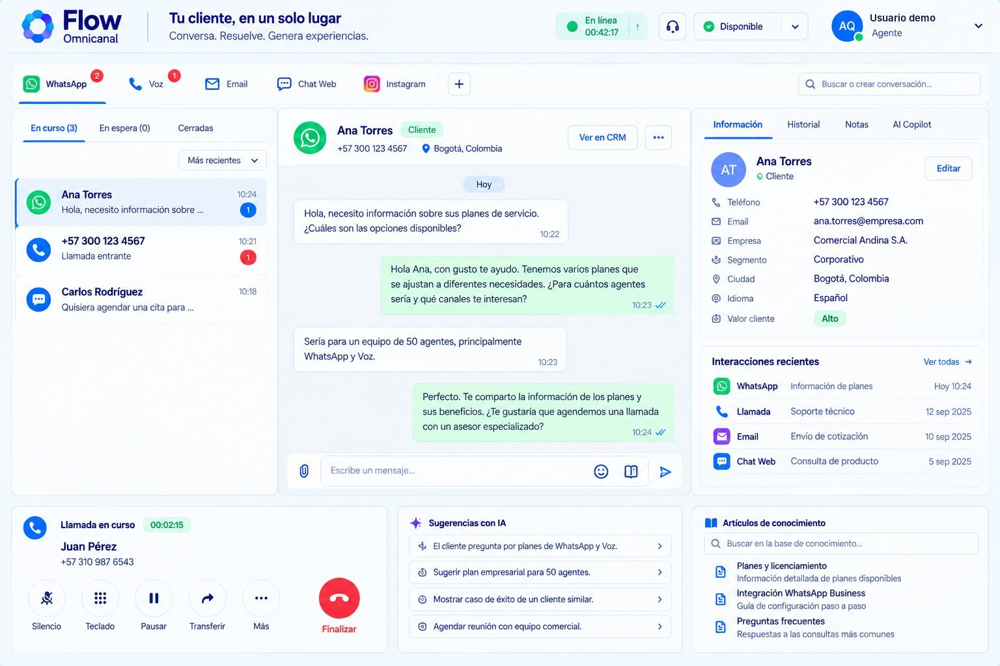
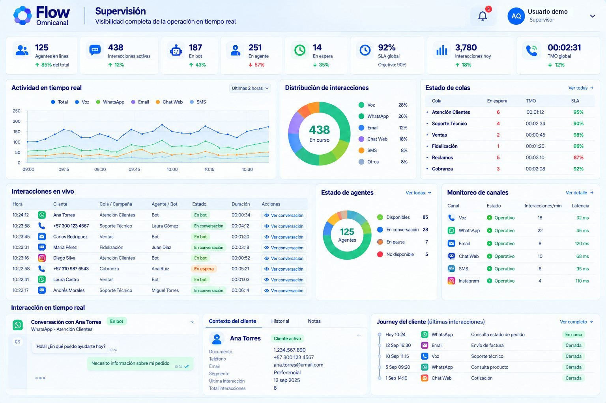
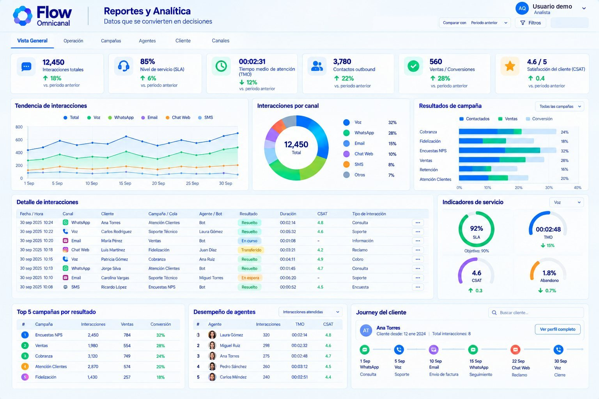
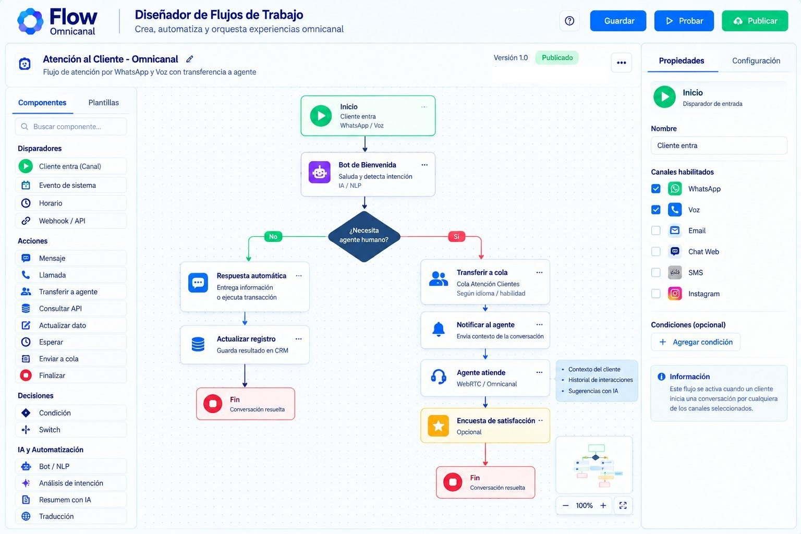
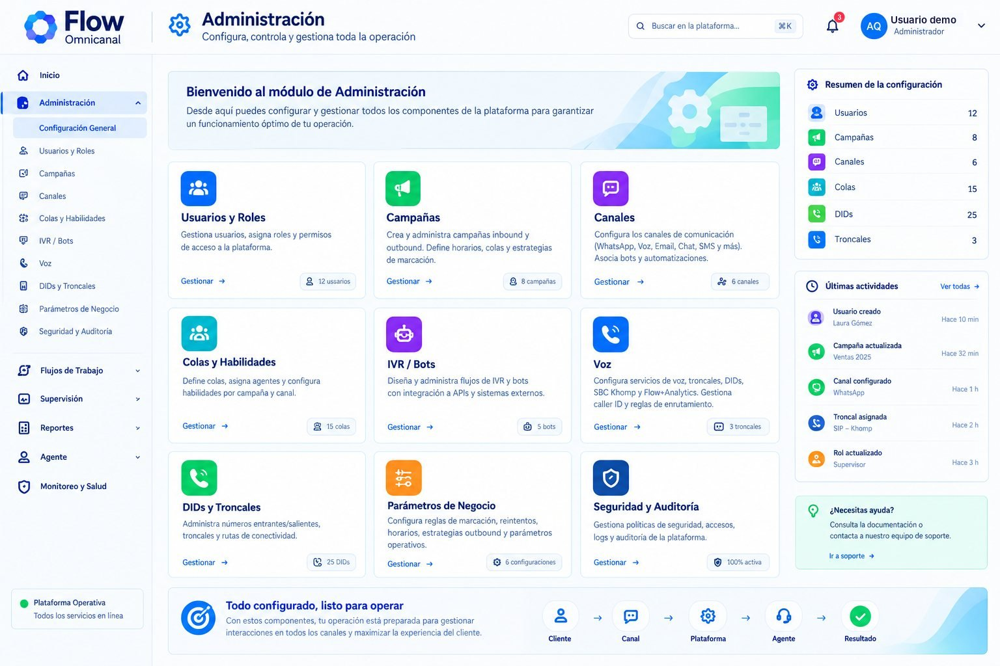
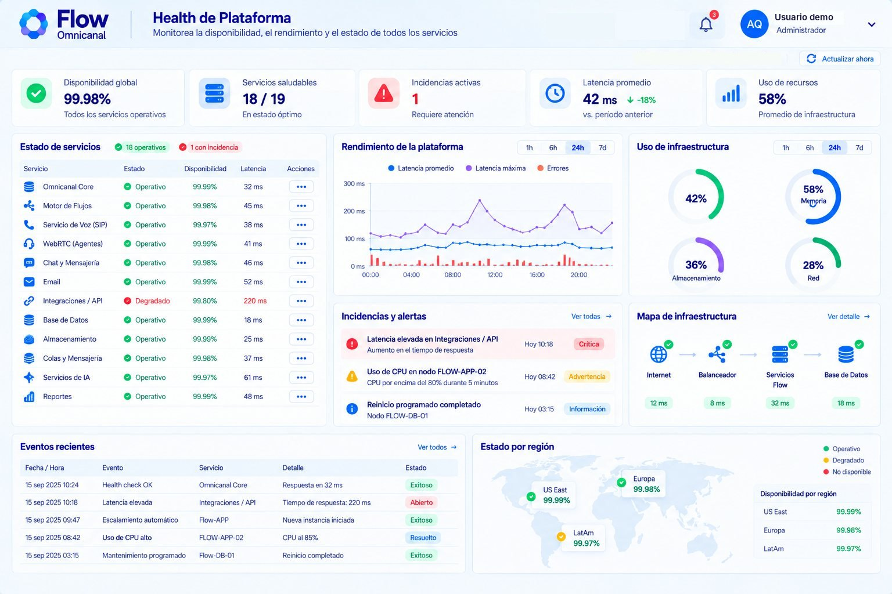

DesarrollAndo
DesarrollAndoTu contact center de voz y WhatsApp, en el navegador.
Voz y WhatsApp en la misma pantalla del asesor, supervisión en vivo, grabación y transcripción de cada llamada, y reportes para decidir. Con tu operador de telefonía o con el nuestro.

Lo que resuelve en tu operación
Un CTI conecta el teléfono con la pantalla del asesor. Flow Omnicanal suma todo lo que un contact center necesita alrededor de cada llamada.
Atender sin conmutador
El asesor contesta, pone en espera, transfiere y cuelga desde el navegador, con una diadema. Sin teléfonos de escritorio ni centrales.
Que cada llamada tenga a dónde ir
Cada número va a su cola o a un asistente de voz con IA (se cotiza aparte). Las colas tienen horario, festivos y a dónde pasa la llamada si se llenan.
Supervisar mientras pasa
Colas, nivel de servicio y estado de cada asesor en vivo. El supervisor escucha, le habla al asesor sin que el cliente lo oiga o interviene.
Medir cada contacto
Todas las llamadas quedan grabadas y transcritas. Reportes por canal, asesor y campaña, y los tuyos propios, exportables.
DesarrollAndoFlow Omnicanal · CTI de DesarrollAndoSeis módulos, una sola plataforma
Pantallas de Flow Omnicanal · datos de ejemploCada rol trabaja en su módulo, sobre los mismos datos.
Asesor
Teléfono en el navegador y WhatsApp en la misma bandeja, con la ficha y el historial del cliente.

Supervisión
La operación en tiempo real: colas, nivel de servicio, asesores e interacciones en vivo.

Reportes y analítica
Tendencias, desempeño por asesor, cada llamada con su transcripción y reportes propios.

Diseñador de flujos
Recorridos de atención y de salida sin programar, que se simulan antes de publicar.

Administración
Usuarios y roles, colas, números, troncales, horarios legales, auditoría y claves de API.

Salud de la plataforma
Disponibilidad y latencia de cada servicio, para detectar a tiempo cualquier falla.
DesarrollAndoFlow Omnicanal · CTI de DesarrollAndoTodo el cliente en una pantalla
Atiende llamadas y chats desde el mismo lugar, sin saltar entre aplicaciones.
- 1Bandeja por canalVoz y WhatsApp, con lo que está en curso, en espera y cerrado.
- 2La llamada en la pantallaContestar, silenciar, teclado, pausa, transferir y finalizar.
- 3Ficha e historialDatos del cliente e interacciones recientes por voz y WhatsApp.
- 4Ayuda en vivoRecibe indicaciones del supervisor durante la llamada sin que el cliente las oiga, y notas privadas en los chats.
DesarrollAndoFlow Omnicanal · CTI de DesarrollAndoLa operación en tiempo real
Qué pasa ahora, dónde hay un problema y qué hacer.
- 1Indicadores en vivoAsesores en línea, interacciones activas, en espera, nivel de servicio y tiempo medio.
- 2Colas con alertasEspera y nivel de servicio por cola, contra su objetivo y con alerta.
- 3Escuchar, hablar o intervenirEntra a una llamada sin que nadie lo oiga, le habla solo al asesor o habla con los dos.
- 4Asesores y pausasDisponibles, en conversación o en pausa; las pausas las aprueba o rechaza el supervisor.
DesarrollAndoFlow Omnicanal · CTI de DesarrollAndoDecidir con números
Lo que pasó, por canal, asesor y campaña, sin armar reportes a mano.
- 1TendenciasInteracciones y atendidas por canal en 7, 30 o 90 días.
- 2Cada llamada, buscableGrabación y transcripción turno por turno; busca una palabra y llega al segundo exacto.
- 3Voz del clienteLos términos que más repiten tus clientes en las llamadas.
- 4Reportes propiosAgrupa, mide y grafica a tu medida; exporta a CSV o PDF.
DesarrollAndoFlow Omnicanal · CTI de DesarrollAndoRecorridos de atención, sin programar
Arrastra los pasos, conéctalos y simula antes de publicar.
- 1EntradaUn mensaje de WhatsApp activa el recorrido: saluda, pregunta con opciones y pasa a la cola correcta.
- 2SalidaEl asistente de voz llama a una lista; si nadie contesta, envía una plantilla de WhatsApp.
- 3AccionesMensajes, preguntas, llamadas de voz, consultas a otros sistemas por API (la integración se cotiza aparte) y transferencias.
- 4ControlSe simula con respuestas de prueba antes de publicar y cada ejecución queda registrada.
DesarrollAndoFlow Omnicanal · CTI de DesarrollAndoConfigura tu operación y cumple la norma
Todo lo que define cómo trabaja tu contact center, en un solo lugar.
- 1Usuarios y rolesPropietario, administrador, desarrollador, supervisor, asesor y lector, cada uno con sus permisos.
- 2Colas y númerosColas con prioridad, horario, festivos y desborde; cada número va a una cola o a un asistente de IA.
- 3Ley 2300Llamadas salientes solo en el horario legal, y los números de tu lista de exclusión no se marcan.
- 4SeguridadAuditoría de cada cambio y claves de API con permisos para integrar tus sistemas.
DesarrollAndoFlow Omnicanal · CTI de DesarrollAndoMíralo funcionando
Grabaciones de la plataforma · datos de pruebaCuatro recorridos grabados en Flow Omnicanal, tal como funciona hoy.
Las pantallas de las demás láminas muestran el diseño de la plataforma; los videos, la plataforma en funcionamiento.
DesarrollAndoFlow Omnicanal · CTI de DesarrollAndoInversión
Configuramos la plataforma con tu operación: usuarios y roles, colas y horarios, números de voz y flujos de atención. Incluye la capacitación de tu equipo.
Cada usuario de la plataforma cuenta como una licencia, sea asesor, supervisor o administrador.
Con nuestra telefonía, pagas cada mes solo los minutos que usaste.
Valores en pesos colombianos. La puesta en marcha se paga una vez; licencias y telefonía, cada mes. Los cobros de Meta por los mensajes de WhatsApp van aparte y los paga cada cliente en su cuenta de Meta.
DesarrollAndoFlow Omnicanal · CTI de DesarrollAndoPreguntas frecuentes
¿Necesito comprar teléfonos?
No. El asesor atiende desde el navegador con un computador y una diadema.
¿Quién cuenta como licencia?
Cada usuario de la plataforma: asesor, supervisor o administrador. 100.000 COP al mes por cada uno.
¿Cómo se cobra la telefonía?
Por minuto consumido en el mes, a 46 COP, si usas la nuestra. Si conectas tu operador, los minutos se los pagas a él.
¿Se graban las llamadas?
Sí, todas, también las de los asesores, con su transcripción para buscar y analizar.
¿Quién responde por los datos?
Tu empresa es responsable del tratamiento de los datos de tus clientes y DesarrollAndo es encargado, con la cláusula de transmisión en el contrato.
¿Ayuda a cumplir la Ley 2300?
Sí. Solo permite llamadas salientes en el horario legal y no marca los números de tu lista de exclusión, como los del Registro de Números Excluidos que cargues. La autorización y la frecuencia de cada contacto las define tu operación.
¿Se conecta con mi CRM?
Sí, por API. Esa conexión se cotiza aparte, según el alcance.
¿Cuánto tarda la puesta en marcha?
Depende de tu operación y de los accesos a la telefonía; lo definimos contigo antes de empezar.
DesarrollAndoFlow Omnicanal · CTI de DesarrollAndoDesarrollAndoTres pasos para arrancar
Cuántos usuarios, qué colas y horarios, y cuántos minutos al mes.
Usuarios, colas, números, flujos y la telefonía: la nuestra o la tuya.
Tu equipo atiende desde el navegador y el supervisor mide desde el primer día.
DesarrollAndo es Meta Business Partner · +10 millones de interacciones en nuestra plataforma de asistentes con IA